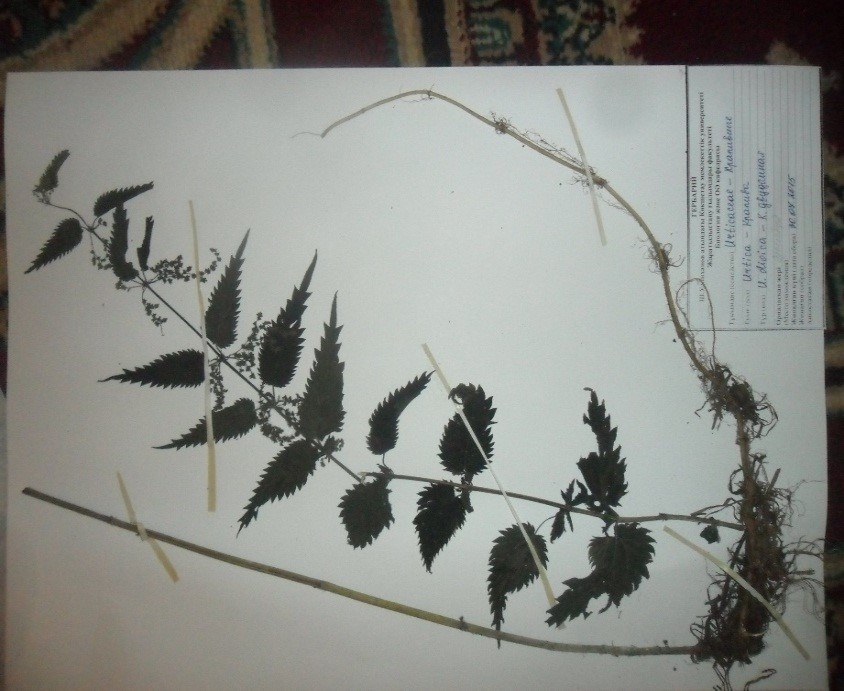

Қосүйлі қалақай - Urtіca diоica L - Крапива двудомная

Биологиялық сипаттамасы: : қосжарнақты, көп жылдық, шөп тектес өсімдік. Биіктігі 1 метрге жуық. Сабағы төрт қырлы, түзу, жоғарғы жағында бұтақтары көп. Жапырақтары жүрек тәрізді, ұш жақтары сүйірлеу, бір-біріне қарама-қарсы орналасады, сағақтары ұзын, шеттері ірі, ара тісті. Жапырақтары мен сабағы тиген жерді дуылдататын күйдіргіш түк басқан. Гүлдері майда, көкшіл түсті. Бір өсімдікте аталық гүлдер өссе, екіншілерінде тек аналық гүлдер ғана өседі, сондықтан қалақайды "қос үйлі" деп атайды. Маусым айынан қыркүйекке дейін гүлдейді. Қосүйлі қалақай үй маңайында, жол жиегінде, бос алаңдарда, егістік жерлерде өседі.
Таралу аймағы: Екі жарты шардың қоңыржай аймағында барлық жерде таралған. Қазақстанның барлық аймақтарында, орманды, өзен жағалаулары, жол жиектерінде өседі.